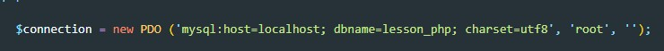

Для того что бы подключиться к БД, создаем переменную connection которая будет экземпляром класса PDO (php data object). PDO - это встроенная в php библиотека с методами по работе с базами данных. Существуют еще бблиотеки mysql и mysqlli - но они считаются устаревшими.
Далее мы создаем переменную, куда поместим данные из таблицы. Для этого обратимся к переменной connection и вызовем у нее метод query. В качестве входного параметра метод query принимает SQL запрос
Дело в том, что query вернет нам объект PDO но уже с данными. Что бы эти данные превратить в удобочитаемый массив вызовем метод fetch
Этот способ удовен усли у нас в таблице одна запись, например для заполнения страницы одноразовыми записями, заголовки разделов и тд. Что бы вывести текст на страницу мы просто обращаемся к aboutData и как в случае с ассоциативным массивом обращаемся к тому элементу к которому нам надо
Получаем данные из талицы
Создаем простой forEach (здесь fetch использовать уже нет необходимости)
У нас есть простейшая форма
Далее получаем данные с формы и с помощью SQL запроса записываем это в БД
Конкретно в этом примере я столкнулся с проблемой тот что данные хранящиеся в глобальном объекте POST не очищались и при обновлении страницы при пустых полях в таблицу добавлялась запись с данными которые хранились в POST, более того, если я вводил в поля данные и нажимал отправить, в таблицу добавлялись данные с прошлого POST, а при обновлении страницы в таблицу добавлялись данные уже с новыми значениями хотя по факту форма сбросилась.
Большое внимание уделяем конкатенации строк и кавычкам
Для того что бы обнулить глобальный объект $_POST необходимо дописать следующий код
Иными словами мы редиректим на эту же страницу и при редиректе глобальный объект обнуляется и все прекрасно работает.